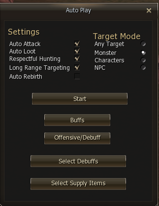

✦ ✦ ✦
Commands
Reference the most important chat commands used on Kairos.
Essential Commands
Use the following commands to manage your account, party, and gameplay experience.
| Command | Action |
|---|---|
.register | Create a new account. |
.changepassword | Update your password securely. |
.party | Manage party invitations and members. |
Auto Play — .play
Opens the Auto Play modal, which lets you configure your character's automated hunting behaviour. Useful for grinding mobs hands-free.

Settings
| Setting | Description |
|---|---|
| Auto Attack | Enables basic weapon attacks (swords, bows, daggers). No skills — pure auto-hit. Best for warriors and physical classes. |
| Auto Loot | Automatically picks up dropped items while Auto Play is running. Has no effect when Auto Play is stopped. |
| Respectful Hunting | Skips mobs that are already engaged by another player. Prevents accidental interference and reduces conflict in shared zones. |
| Long Range Targeting | Extends target acquisition range — ideal for archers, mages, and skill-based ranged classes. Not recommended for daggers |
| Auto Rebirth | Automatically triggers the Rebirth process when conditions are met. See Rebirth for details. |
Target Mode
| Mode | What it targets |
|---|---|
| Any Target | Everything — monsters, players, and NPCs. |
| Monster | Monsters only. The safest choice for PvE grinding. |
| Characters | Players only. Use in PvP zones. |
| NPC | NPCs only. |
Buttons
| Button | Description |
|---|---|
| Start / Stop | Toggles Auto Play on and off. All settings above are applied at the moment you press Start. |
| Buffs | Select any learned skill to cast automatically when its buff duration expires. No slot limit — any available buff skill can be included. |
| Offensive / Debuff | Choose one or more attack skills used during Auto Play rotation. Supports multiple skills — pick your farming rotation here. |
| Select Debuffs | Up to 5 debuff skills applied automatically to targets while Auto Play is active. |
| Select Supply Items | Add consumables (HP/MP potions, Cocktails, etc.) that are used automatically during combat when thresholds are reached. |
First time?
See Getting Started — Auto Play for a step-by-step walkthrough on setting it up for the first time.
Help
For a full list of available commands type .help in chat or check the server message boards.